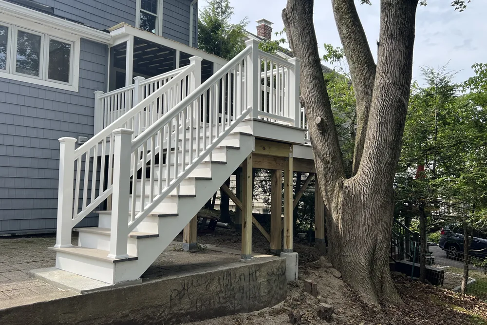
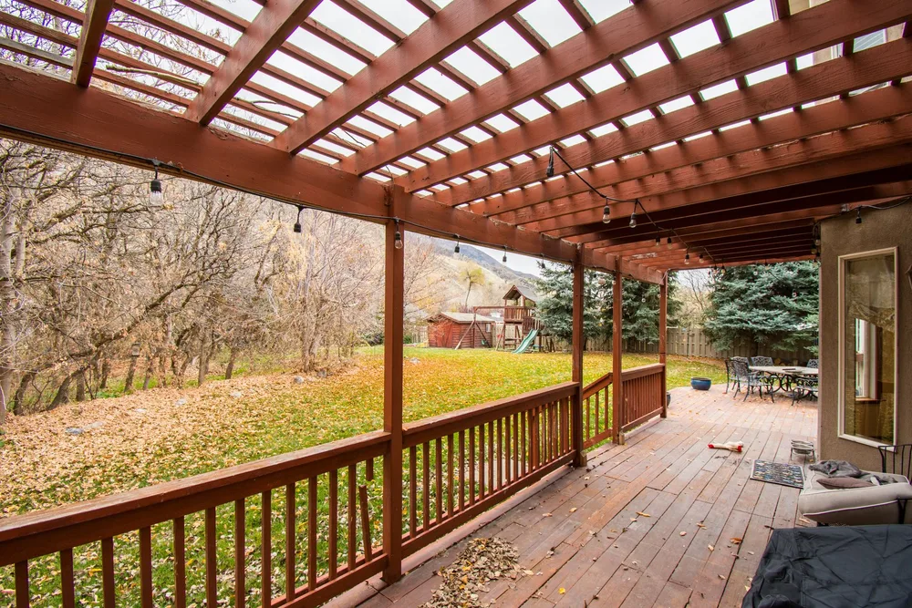
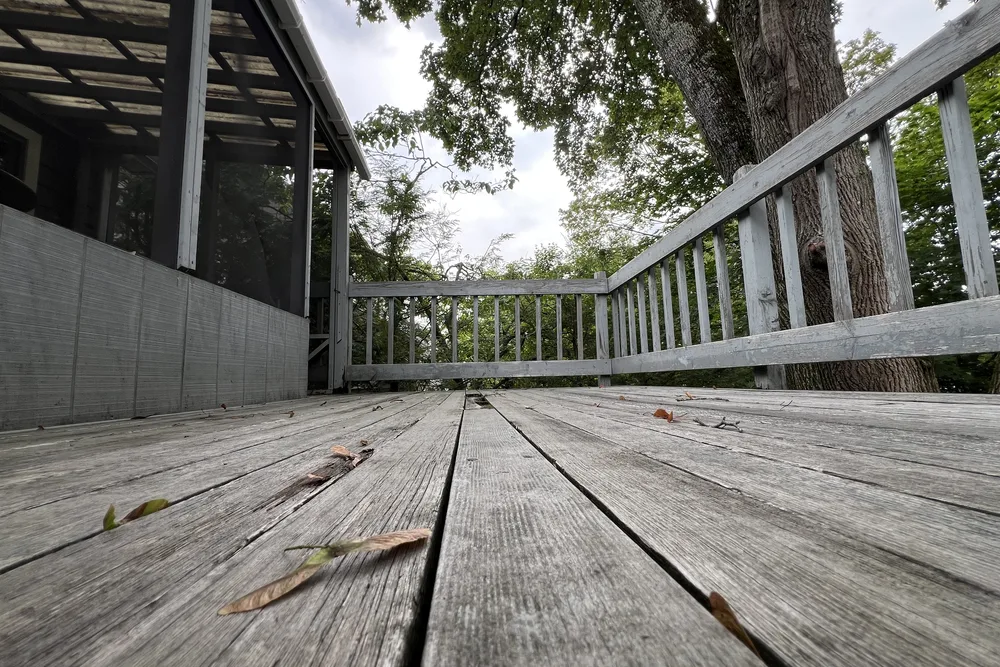
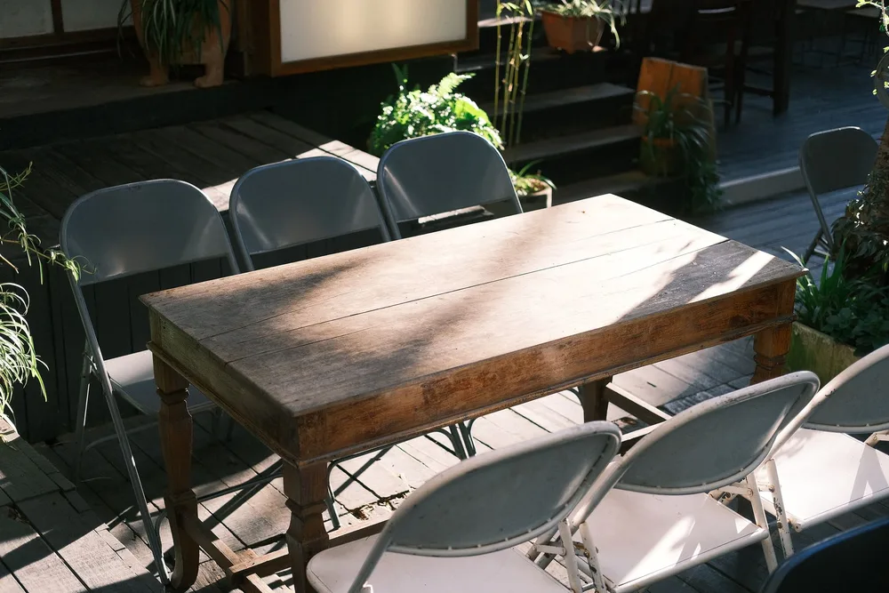
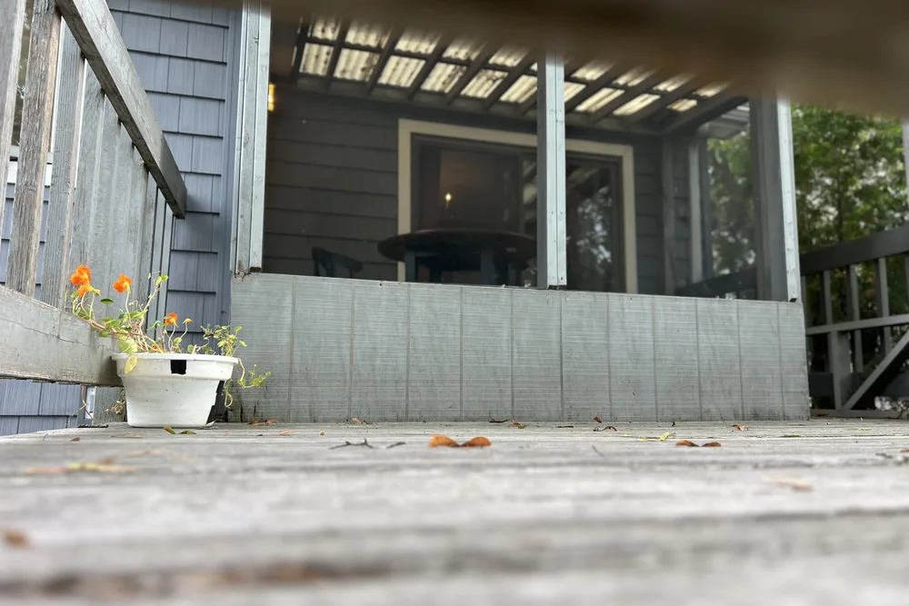
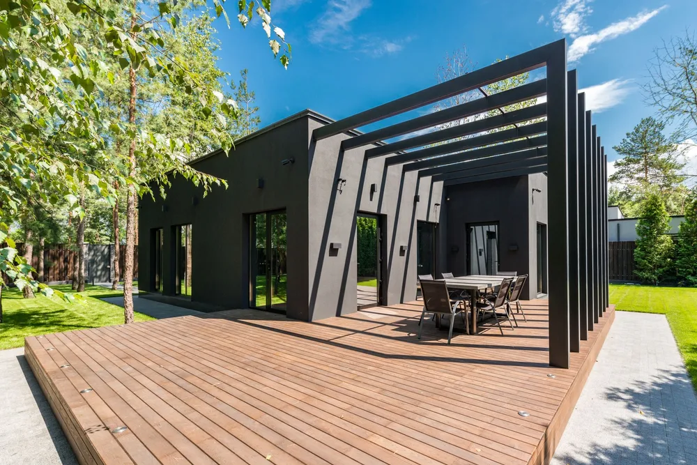
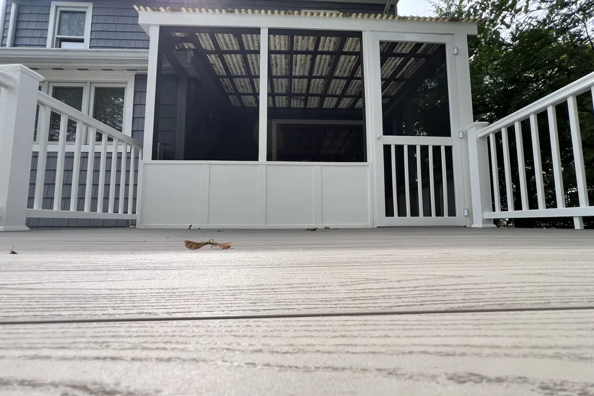
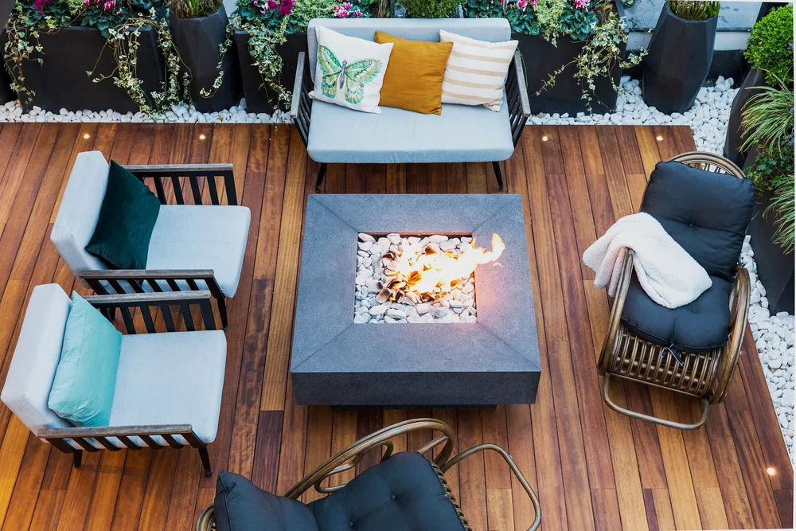

Townsend deck contractors
Deck Builders Townsend MA, planned and built by DeFaria
Deck Builders Townsend MA projects start with a written plan and an owner-led walkthrough. Townsend deck builders at DeFaria Construction plan framing, decking, railings and layout so the outdoor space is safe, durable and ready for New England seasons.
Our work
A real DeFaria project, built right
Quality you can see and craftsmanship you can trust, from framing to finish.
Get a Free Estimate
Local search focus
Townsend decks start with the frame you cannot see.

Across Townsend Center, West Townsend and Townsend Harbor, Townsend mixes antique Colonials and Federal-era homes in its three village centers with newer single-family homes on larger wooded lots. A Townsend deck lives outside through hot summers and hard winters, so the footings, framing and fasteners matter as much as the boards on top.
This page is built for Townsend homeowners comparing deck builders and deck contractors near them. It connects the Townsend search to project photos, neighborhoods, the full deck scope and a direct estimate path.
- Clear estimate conversations before the project starts.
- Direct communication with the homeowner from walkthrough to final walkthrough.
- Local coverage across Townsend and the wider Middlesex County area.
The scope
What a full Townsend deck project covers

In Townsend, antique Colonials and Federal-era homes in the three village centers alongside newer homes on wooded lots often shape any interior project.
- Structure and footings built for the site and frost line.
- Decking, railings and stairs done to code.
- Layout and access planned around the home and yard.
Townsend permits and inspections run through the Town of Townsend Building Department, and DeFaria keeps that step organized so scope and timeline stay realistic.
Cost
How much does a deck cost in Townsend?

Most Townsend decks land between $8,000 and $30,000, roughly $20 to $60 per square foot, depending on size, material and how high off the ground it sits.
- The size and height of the deck.
- Pressure-treated wood versus composite decking.
- Railings, stairs and any built-in features.
- Footings and framing for the site and load.
In Townsend, antique Colonials and Federal-era homes in the three village centers alongside newer homes on wooded lots often shape any interior project, so the estimate accounts for access, structure and prep before a single fixture is ordered.
DeFaria gives a fixed, itemized Townsend estimate at the walkthrough, so the price matches the actual scope instead of a guess.
Process
How a Townsend deck project runs, step by step

Every Townsend deck runs on a clear sequence, from footings to final railing.
- Walkthrough, design and a clear, itemized estimate.
- Permits handled with the town.
- Footings and posts set for the load and frost line.
- Framing and structural connections to the home.
- Decking boards installed and fastened.
- Railings, stairs and any built-ins.
- Final details and a walkthrough before you sign off.
DeFaria coordinates the Townsend permit with the Town of Townsend Building Department before the rough-in, and keeps you updated at each step.
Most Townsend decks take about 1 to 3 weeks, depending on size, height and materials.
Materials
Materials and finishes that hold up on Townsend decks

A Townsend deck faces sun, rain and snow all year, so the framing, fasteners and decking are chosen to last outdoors.
- Solid footings and framing for a deck that stays level.
- Decking chosen for durability and low upkeep.
- Weather-rated hardware throughout.
- Safe, code-built railings and stairs.
From Townsend Center to Townsend Harbor, antique Colonials and Federal-era homes in the three village centers alongside newer homes on wooded lots often shape any interior project, which is exactly why the finish is specified for the home rather than a catalog.
When to remodel
Signs it is time for a new Townsend deck

A few clear signs a Townsend deck is ready to replace or build:
- Rotting boards or popped fasteners.
- Railings or stairs that no longer feel solid.
- A frame or ledger showing its age.
- Wanting a better backyard to actually use.
- Boosting the home before listing.
They are common across Townsend, from Townsend Center to Townsend Harbor.
Decking Materials
Decking Materials Compared for Townsend Homes
Choosing the right decking material is the first real decision for any Townsend deck project. Pressure-treated pine is the budget workhorse and holds up well when sealed, while western red cedar brings natural warmth and resists rot without chemical treatment. Composite boards like Trex blend wood fibers and plastic for a low-maintenance surface, and full PVC decking shrugs off moisture entirely.
Because antique Colonials and Federal-era homes in the three village centers alongside newer homes on wooded lots often shape any interior project in Middlesex, we help you weigh upfront cost against years of upkeep. Pressure-treated lumber costs the least to install but needs staining every couple of seasons; composite and PVC cost more now and give you back weekends later. We lay out real numbers so the choice fits your home and your budget, not a sales pitch.
In Townsend, homeowners near Townsend Center, West Townsend and Townsend Harbor get a decks and patios scoped for the neighborhood and the Middlesex County housing it sits in, permitted through Town of Townsend Building Department.
Here is the local picture behind the decks and patios: Townsend mixes antique Colonials and Federal-era homes in its three village centers with newer single-family homes on larger wooded lots.
For Townsend homeowners in Townsend Center, West Townsend and Townsend Harbor, the decks and patios is scoped locally.
- Budget builds start with pressure-treated framing and boards
- Cedar stays cooler underfoot on hot summer days
- Composite hides scratches and resists mold growth
- PVC handles moisture without ever swelling or rotting
Design And Layout
Deck Design and Layout for Townsend Backyards
Layout is where a Townsend deck earns its keep, so we start with how you want to use the space. Size drives everything, then we work out levels, stair runs and railing lines that feel open rather than boxed in. A well-placed set of stairs can connect the deck to a patio, a pool or the lawn without wasted steps.
Every Middlesex yard has its own grade and sight lines, and antique Colonials and Federal-era homes in the three village centers alongside newer homes on wooded lots often shape any interior project can shape where posts and footings land. We design around those realities so the finished deck sits level, drains properly and connects cleanly to your home. Nothing gets ordered until you sign off on the plan.
Across Townsend neighborhoods like Townsend Center, West Townsend and Townsend Harbor, we plan the decks and patios around how Middlesex County homes are actually built, and coordinate the local approvals with Town of Townsend Building Department.
Here is the local picture behind the decks and patios: Townsend mixes antique Colonials and Federal-era homes in its three village centers with newer single-family homes on larger wooded lots.
- Size and shape planned around how you entertain
- Multi-level designs solve sloped or awkward yards
- Stair placement connects deck to patio or lawn
- Railing style balances views, safety and budget
Footings And Code
Footings, Framing and Code in Townsend
The parts you never see are the parts that keep a Townsend deck standing for decades. Frost depth in Massachusetts is real, so footings go below the frost line and rest on undisturbed soil rated to carry the load. From there we frame with correctly spaced joists, a bolted and flashed ledger, and galvanized or stainless hardware built for the weather.
We also keep the build legal and inspected. Townsend permits and inspections run through the Town of Townsend Building Department, and DeFaria keeps that step organized so scope and timeline stay realistic. Working with the Town of Townsend Building Department, we pull permits and book inspections at each stage. Since antique Colonials and Federal-era homes in the three village centers alongside newer homes on wooded lots often shape any interior project in Middlesex, a deck built to code is not optional; it is the difference between a structure that lasts and one that shifts.
From Townsend Center to West Townsend and Townsend Harbor, every Townsend decks and patios is matched to the local housing stock in Middlesex County, with Town of Townsend Building Department handling the permit side.
The Townsend decks and patios is built for the neighborhood it sits in. Townsend mixes antique Colonials and Federal-era homes in its three village centers with newer single-family homes on larger wooded lots.
- Footings dug below Massachusetts frost depth line
- Ledger board flashed and bolted to the house
- Joist spacing matched to your decking material
- Permits pulled and inspections scheduled for you
Patios And Hardscape
Patios and Hardscape Options in Townsend

A patio can be the smarter choice for many Townsend homes, especially where the yard is close to grade. Pavers and natural stone give you a durable, low-profile surface that ties into gardens, walkways and seating areas. There is no ledger, no railing and no elevated framing, which often means a simpler build and a cleaner look.
We design hardscape around how you gather, adding fire pits, retaining walls or a defined dining zone across your Middlesex yard. Since antique Colonials and Federal-era homes in the three village centers alongside newer homes on wooded lots often shape any interior project, the base preparation matters as much as the surface, so we compact and grade for drainage. When a patio serves you better than a deck, we say so.
In Townsend, homeowners near Townsend Center, West Townsend and Townsend Harbor get a decks and patios scoped for the neighborhood and the Middlesex County housing it sits in, permitted through Town of Townsend Building Department.
Local context shapes the work: Townsend mixes antique Colonials and Federal-era homes in its three village centers with newer single-family homes on larger wooded lots. We plan the Townsend decks and patios around exactly that.
- Best fit when the yard sits close to grade
- Retaining walls solve slope and add usable space
- Edging and base depth prevent seasonal shifting
- Honest deck versus patio advice for your budget
What To Expect
Maintenance, Longevity and Timeline in Townsend

The last question most Townsend homeowners ask is simple: how long will it last and what does it take to maintain. Pressure-treated and cedar decks need periodic cleaning and sealing to fight the Middlesex weather, while composite and PVC stay handsome with a rinse. We size the material to how much upkeep you actually want to do.
Expect a project in the range of $20 to $60 per square foot, so a typical deck lands between $8,000 and $30,000, depending on size, materials and height, and a timeline of about 1 to 3 weeks. Owner Luiz DeFaria does the walkthrough, gives a fixed and itemized estimate, and stays hands-on so the finished deck matches what you were promised.
For homes near Townsend Center, West Townsend and Townsend Harbor, the Townsend decks and patios is planned case by case, with Middlesex County permits handled by Town of Townsend Building Department.
It helps to know the housing: Townsend mixes antique Colonials and Federal-era homes in its three village centers with newer single-family homes on larger wooded lots. The Townsend decks and patios is scoped to fit it.
- Longevity matched to the upkeep you want to give
- Licensed, insured and A+ rated with verified reviews
- Price and timeline confirmed before work begins
- Timeline of roughly 1 to 3 weeks for most decks
Project photos
Deck photos for Townsend homeowners
The Townsend deck page pairs local search intent with real project photos, so visitors see the finish level before requesting an estimate.
Areas covered
Decks across Townsend neighborhoods
DeFaria Construction supports deck searches across Townsend and nearby Middlesex County towns, giving visitors enough local context to decide whether DeFaria is the right fit before they call.
Across Townsend Center, West Townsend and Townsend Harbor, Townsend projects are matched to the neighborhood and run through the Town of Townsend Building Department.
- Townsend Center
- West Townsend
- Townsend Harbor
Reviews
What Townsend homeowners say about DeFaria Construction
DeFaria Construction has a 5.0 rating from 15 reviews on Google. See all reviews on Google.
Luiz has been doing construction for us for close to 20 years. Large jobs are small. He does excellent work and we’re always very pleased with it. His quotes are always very reasonable. I would highly recommend him.
Very professional, efficient and thorough. They are extremely attentive to details and are fast-paced. Best contractor I’ve worked with!
Extremely happy that I went with DeFaria Construction to renovate our half bathroom. What I appreciated most about working with Luiz is that him and his crew were honest, reliable and they really cared about the details that were important to me! Everyday they came as scheduled and every evening…
Experience
Why this Townsend page is built for real homeowners, not just keywords.
DeFaria Construction is a local construction and remodeling company serving homeowners and business owners across Essex County and Middlesex County. With direct owner involvement from Luiz DeFaria and BBB A+ credibility in the trust stack, the Townsend deck page is written around real framing, materials and safe finish, not a city name dropped into a template.
DeFaria Construction is a licensed and insured local contractor with an A+ BBB rating and verified customer reviews, and every Townsend project is owner-led by Luiz DeFaria from the first walkthrough to the final one.
"the Townsend deck came out clean, from the footings to the railings."
Townsend homeowner

What Townsend and nearby Middlesex County homeowners say: Read DeFaria Construction reviews on Google. BBB Accredited Business with an A+ rating since March 2024, verify on BBB.
The goal is to help someone searching for Townsend deck contractors understand the scope, the neighborhoods covered and how to start a direct conversation before requesting a free estimate.
Call (617) 893-2221 for a free estimateFAQ
Common questions about decks and patios in Townsend
What deck work does DeFaria Construction handle in Townsend?
In Townsend DeFaria Construction handles footings, framing, decking, railings, stairs and built-ins for a new deck or a full deck rebuild.
How much does a deck cost in Townsend?
A Townsend deck usually runs about $20 to $60 per square foot, so most decks land between $8,000 and $30,000 depending on size and materials. DeFaria gives a fixed, itemized estimate at the walkthrough.
How long does a Townsend deck take to build?
Most Townsend decks take about 1 to 3 weeks once permits are in, depending on size, height and materials.
Should I use pressure-treated wood or composite for my Townsend deck?
Both work in Townsend. Pressure-treated wood costs less up front; composite costs more but needs less upkeep. DeFaria helps you weigh budget, look and maintenance at the walkthrough.
Is DeFaria Construction licensed and insured?
Yes. DeFaria Construction is a licensed and insured contractor with an A+ BBB rating and verified reviews, and every Townsend project is owner-led by Luiz DeFaria.
Does DeFaria handle Townsend deck permits and inspections?
Yes. Townsend permits and inspections run through the Town of Townsend Building Department, and DeFaria keeps that step organized so scope and timeline stay realistic.